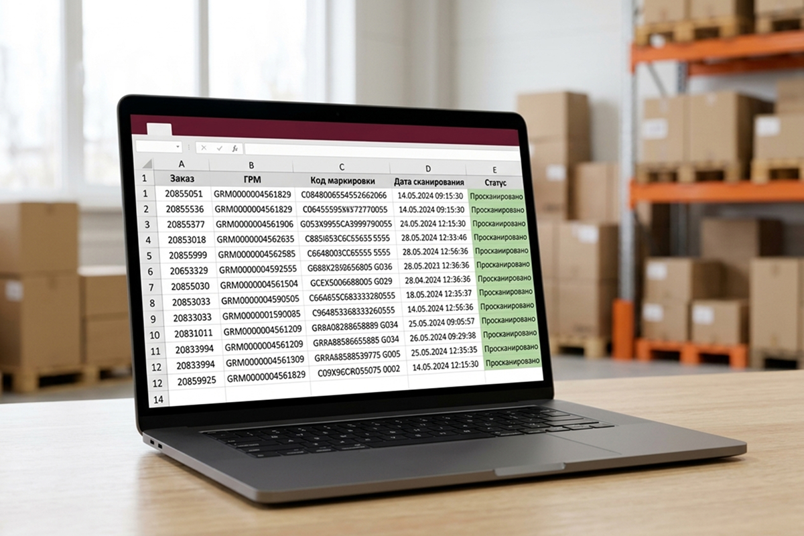

Реестр кодов Data Matrix — это перечень кодов, фактически отсканированных складом при подготовке конкретного заказа на отгрузку. Чтобы его получить, поклажедатель создает в личном кабинете заявку на выдачу груза и подключает к ней сканирование — можно сразу заказать фиксацию кодов «Честный ЗНАК» для нужной отгрузки
Поклажедатель — организация, индивидуальный предприниматель или физическое лицо, передающие товар на склад для хранения и складской обработки
Порядок работы в шести шагах:
- Подготовьте данные об отгрузке: номера ГРМ, предполагаемое количество кодов, расположение этикеток и требования к реестру
- Выберите нужные ГРМ в личном кабинете и создайте заявку на выдачу или доставку
- Добавьте к заявке сканирование кодов «Честный ЗНАК» и укажите формат реестра и особые требования к обработке
- Согласуйте вскрытие упаковки, если коды находятся внутри короба или под транспортной упаковкой
- Склад сканирует доступные коды Data Matrix терминалом сбора данных и фиксирует каждый код в составе заказа
- Получите реестр фактически отсканированных кодов и используйте его в своей учетной системе, ЭДО или ГИС МТ
Сканирование выполняется только на выходе груза со склада, а до этого учет ведется по грузовым местам. Так устроено хранение грузов с удаленным управлением в «АМБАР»: нужные места выбирают и заказывают через личный кабинет, без визита на склад. Ниже — подробно о каждом шаге
Для чего требуется реестр
При приемке склад учитывает груз по грузовым местам: каждой коробке или паллете присваивается номер ГРМ, выполняются замер и фотофиксация. Коды Data Matrix на товарах внутри закрытых мест при этом не сканируются. Поэтому, когда маркированный товар уходит со склада, перечень его кодов можно получить только отдельным сканированием на выходе
Реестр нужен, если:
- требуется знать, какие экземпляры фактически вошли в конкретную отгрузку;
- перечень кодов нужен бухгалтерии или оператору ЭДО для оформления документов;
- в одной заявке несколько ГРМ, и коды нужно связать с заказом и грузовыми местами;
- важно избежать ручного переписывания кодов
Какие данные подготовить до создания заявки
Чем полнее задание, тем меньше вопросов при обработке. Перед заказом услуги подготовьте:
- номера ГРМ, включенные в отгрузку;
- предполагаемое количество кодов;
- расположение Data Matrix: снаружи или внутри упаковки;
- разрешение на вскрытие транспортной упаковки;
- требование к повторной упаковке;
- нужна ли связь каждого кода с конкретным ГРМ;
- требуемый формат реестра;
- срок подготовки заказа;
- сценарий действий при нечитаемом или отсутствующем коде;
- контактное лицо для согласования расхождений
Подробный чек-лист с пояснениями к каждому пункту — в материале о том, что подготовить владельцу груза перед отгрузкой
Как выбрать ГРМ в личном кабинете
Все грузовые места поклажедателя отображаются в личном кабинете склада — с номером ГРМ и фотографией, сделанной при приемке. По фото удобно узнать нужную коробку или паллету, не приезжая на склад
Дальше поклажедатель отмечает ГРМ, которые нужно выдать, доставить получателю или направить на другой склад, и создает заявку. В заявке указывается необходимость сканирования кодов «Честный ЗНАК», требуемый формат реестра и особые требования к обработке
Когда требуется вскрытие упаковки
Все зависит от того, где находятся коды. Если Data Matrix доступны снаружи, вскрытие не требуется. Если коды находятся внутри короба или под транспортной упаковкой, доступ к ним обеспечивается только по согласованному заданию поклажедателя
В этом случае в заявке стоит сразу указать разрешение на вскрытие и требования к повторной упаковке. Переупаковка выполняется, если услуга упаковки добавлена к заявке и заранее согласованы упаковочные материалы и требования к грузу
Как выполняется сканирование ТСД
Коды считываются терминалом сбора данных (ТСД) и сохраняются в системе без ручного набора символьной последовательности. Обработка заказа идет в таком порядке:
- Сотрудник склада находит выбранные ГРМ и перемещает их в зону обработки заказа
- Если это согласовано, открывает доступ к кодам
- Считывает доступные Data Matrix терминалом сбора данных. Каждый считанный код фиксируется в составе конкретного заказа
- Повторное сканирование одного и того же кода фиксируется и не добавляется как новая единица
- После завершения операции система формирует перечень фактически отсканированных кодов с привязкой к заказу и ГРМ
Чтобы коды были связаны с конкретными грузовыми местами, их сканируют последовательно по отдельным ГРМ — такое требование нужно указать в заявке
Какие поля содержит реестр
Реестр передается в формате XLSX. В нем отражается результат складской обработки заказа:
| Данные | Что содержат |
|---|---|
| Коды Data Matrix | Коды, которые были фактически отсканированы при обработке заказа |
| Номер заказа | Номер заявки или заказа на отгрузку |
| Номера ГРМ | Грузовые места, из которых считаны коды, — если процесс обработки позволяет установить такую связь |
| Результат обработки | Отдельно отмеченные успешно считанные, повторные и нечитаемые коды |
Артикул и наименование товара склад не определяет, если эти данные не были отдельно предоставлены поклажедателем

Что делать с нечитаемыми и отсутствующими кодами
При обработке могут обнаружиться проблемные этикетки. Каждая ситуация фиксируется, а дальнейшие действия выполняются по согласованному заданию:
| Ситуация | Действие склада |
|---|---|
| Код не считывается | Информация передается ответственному сотруднику и поклажедателю |
| Этикетка отсутствует | Единица фиксируется как не имеющая доступного кода |
| Этикетка повреждена | Результат указывается в отчете по обработке |
| Код закрыт упаковкой | Требуется разрешение на вскрытие или изменение упаковки |
| Количество считанных кодов не совпадает с заданием | Отгрузка обрабатывается по согласованному сценарию |
Чтобы не останавливать отгрузку, сценарий действий при нечитаемом или отсутствующем коде и контактное лицо для согласования расхождений лучше указать в заявке заранее
Чем реестр склада отличается от УПД
Реестр и УПД решают разные задачи, и один документ не заменяет другой
| Параметр | Реестр склада | УПД |
|---|---|---|
| Что это | Результат складского сканирования: перечень кодов, считанных в рамках заказа | Электронный документ о передаче товара между участниками оборота |
| Кто формирует | Склад «АМБАР» по итогам обработки заказа | Поклажедатель в своей учетной системе |
| Как передается | Файл передается поклажедателю | Подписывается и отправляется через ЭДО |
| Статус кодов в ГИС МТ | Сам по себе не изменяет | Сведения о передаче кодов обрабатываются через ЭДО и ГИС МТ |
Формирование, подписание и отправка УПД, а также передача сведений в «Честный ЗНАК» не входят в стандартную услугу склада. Складской файл с перечнем кодов не заменяет электронный документооборот
Как поклажедатель использует файл дальше
Реестр передается поклажедателю для дальнейшей работы в его учетной системе, ЭДО или личном кабинете «Честного ЗНАКа». Данные из файла можно загрузить в собственную учетную систему или обработать вручную — например, сверить с заказом покупателя или использовать при оформлении документов на отгрузку
Ответственность за дальнейшую загрузку реестра и оформление электронных документов остается у поклажедателя, если иное не предусмотрено отдельным соглашением. Остальные условия склада АМБАР — хранение, доставка и тарифы — описаны на сайте
Частые вопросы
Можно ли заказать сканирование только при одной отгрузке?
Да. Услугу можно подключить к отдельной заявке на выдачу или доставку груза
Что нужно указать в заявке?
Укажите номера ГРМ, предполагаемое количество кодов, расположение этикеток, разрешение на вскрытие, формат реестра и порядок действий при расхождениях
Нужно ли вскрывать коробки?
Если Data Matrix находится внутри короба, потребуется согласовать вскрытие транспортной упаковки и последующую переупаковку. Если коды доступны снаружи, вскрытие не требуется
В каком формате передается реестр?
Базовый реестр передается в XLSX. Возможность передачи XML указывается только после технического подтверждения
Передает ли «АМБАР» реестр напрямую в ГИС МТ?
Нет. В стандартной услуге склад передает реестр поклажедателю. Загрузка сведений в учетную систему, ЭДО или ГИС МТ выполняется поклажедателем самостоятельно
Формирует ли склад УПД с кодами маркировки?
Нет. Формирование, подписание и отправка УПД не входят в стандартную услугу сканирования на выходе
Получите реестр кодов по своей отгрузке
Если груз уже хранится в «АМБАР», подключите сканирование кодов к заявке на выдачу — менеджер проверит задание, рассчитает стоимость и согласует порядок обработки. Если груз пока не на складе, разместите его на ответственное хранение: каждому месту присвоят ГРМ и сделают фото в личном кабинете